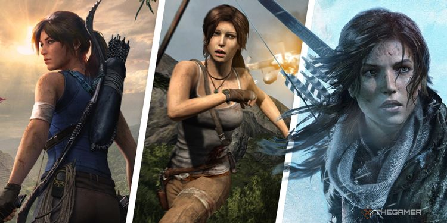

The most recent Tomb Raider trilogy reinvents Lara and what it means to be a Tomb Raider game.

Earlier this week, you might've seen or evergreen editor Helen Ashcroft trying to convince you that the Original Era of Lara Croft is the best, or our editor-in-chief Stacey Henley betting her money on the Legend Era. Don't listen to all that, because Tomb Raider's best years are the Survivor Era. Survivor? I barely know 'er. Anyway... Despite consisting of two fantastic games and one decent one, the Tomb Raider Survivor trilogy doesn't get the respect it deserves, barely coming up in conversation when people mention the series' best. At least two of them are the best of the series, but thanks to how powerful Lara's early legacy has become, they're often overshadowed. Thanks, Shadow of the Tomb Raider, you're not doing me any favours here.
And yet, because of the might of Tomb Raider (2013) and Rise of the Tomb Raider, the Survivor Trilogy still manages to rise (seriously, these names are killing me) above the rest. Shadow might not add a whole lot, but it's still a decent bookend to the whole thing. Hey, every trilogy has its Angel of Darkness moment, alright. Let's start with the Tomb Raider herself - Lara Croft. As an origin story, this is a different version of the character than we've seen before, with less confidence, no experience raiding tombs, and no casual affiliation with murder. We get to see a Lara much more focused on her intelligence, and less about quips and badassery, although there are a few of those chucked in for good measure too. Instead of backflipping over dinosaurs and cheekily shooting the camera, Survivor Lara Croft has far more emotional depth and a focus on telling her story. It's a lot of the same beats we've seen in the past, but more refined, told with more nuance, and thanks to the combination of increased technology and having more time dedicated to the narrative, better performed too. There's just no competition in the story department, and you certainly won't see Lara's death getting randomly retconned. Looking at you there, The Last Revelation. It's remarkable to me that even without iconic elements of her character like the sunglasses and dual pistols, this Lara is still just as recognisable as other iterations. In fact, she managed to add her own lasting identity to the character. Who dragged a bow and arrow back into the 21st century? Lara did. Katniss Everdeen? Clint Barton? Nah, it was Lara. Did you even know what a climbing hook looked like until 2013? That's what I thought. It's not just the storytelling that's more focused, there's a concentrated effort on having a singular theme spread throughout the three games - survival. Lara gets absolutely battered across the trilogy, getting stabbed, punched, thrown down cliffs, and going through the worst gap year in living memory. There are times when it comes across like a dirty modern horror, like Wrong Turn or something equally gratuitous. Despite what you might think of the Survival Era's comical approach to violence, it certainly likes up to its namesake and is more memorable as a result. Beyond its storytelling and reinvention of character, another key strength of the Survivor trilogy is the gameplay. It's closer to Uncharted than it is the other Tomb Raiders, but that's no bad thing. They're brutal, fast-paced, action-packed and so stuffed with setpieces that they're a constant joyride from start to finish. Combat is a particular joy thanks to how fast Lara moves around, and the absolute chonker of a weapon that is the shotgun. When they do occasionally let Lara slow down to dig a spike out of her side or whatever has just ran her over, you're presented with some smart environmental puzzles and platforming challenges. Sure, they're not really tombs, but I still remember the puzzle in the 2013 reboot that had you in a windy cave, pulling open shutters to block the wind and reach the tomb. It's a great way to have Lara start to earn her stripes whilst also giving her more to do than just shoot people in the head. Although all of these elements are present across all three of the Survivor games, there's one that stands far above the others - Rise of the Tomb Raider. This is the game that really figured out what modern Tomb Raider should be, introducing the best puzzles and closest things to Tombs we'd get, tightening up the combat to an almost arcade-esque speed, and advancing the character without forgetting that she still has a ways to go. It's a shame that many gamers probably overlooked it due to the timed exclusivity drama, because it's not just the best game in this trilogy, but it's also one of the best Tomb Raider games full stop. I'd say the same for 2013's Tomb Raider too, although Legend, Tomb Raider 2, and Anniversary might have something to say about that. I've jokingly mentioned it a few times, but have avoided it long enough - Shadow of the Tomb Raider. Look, every trilogy has its low point and Shadow is undeniably that, but it's less that it's a bad game and more that it doesn't stand up to how great Tomb Raider and Rise are. It's a fine action game, a fine end to the trilogy, and doesn't shit its pants quite like Chronicles did. Two fantastic games and one alright one later, the Survivor portion of Lara Croft's life came to an end. Despite commercial and critical success, it's a shockingly underrated part of the Tomb Raider timeline that houses two of its best games. Before Lara Croft changes forever in whatever her next adventure is, give her origin story a visit and see what a modern Tomb Raider can, and should, look like.
Related Posts